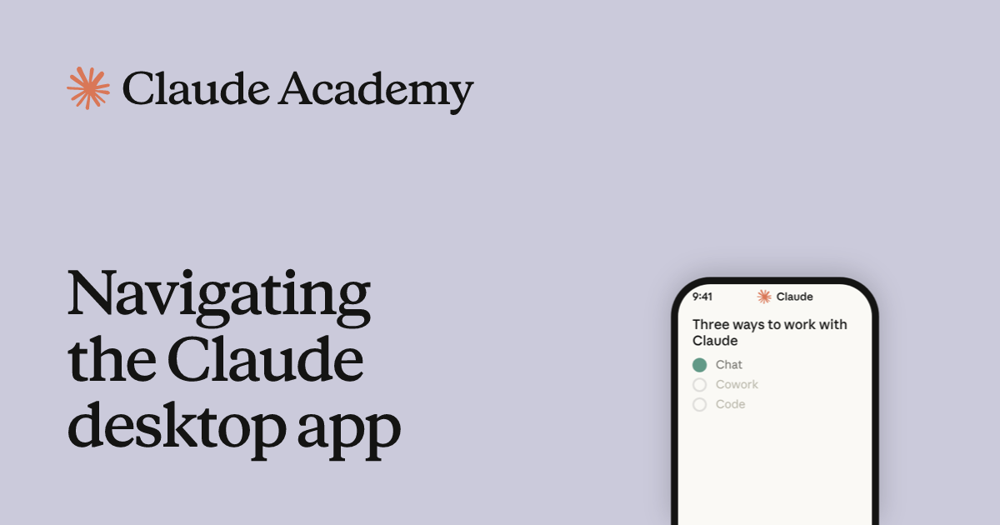
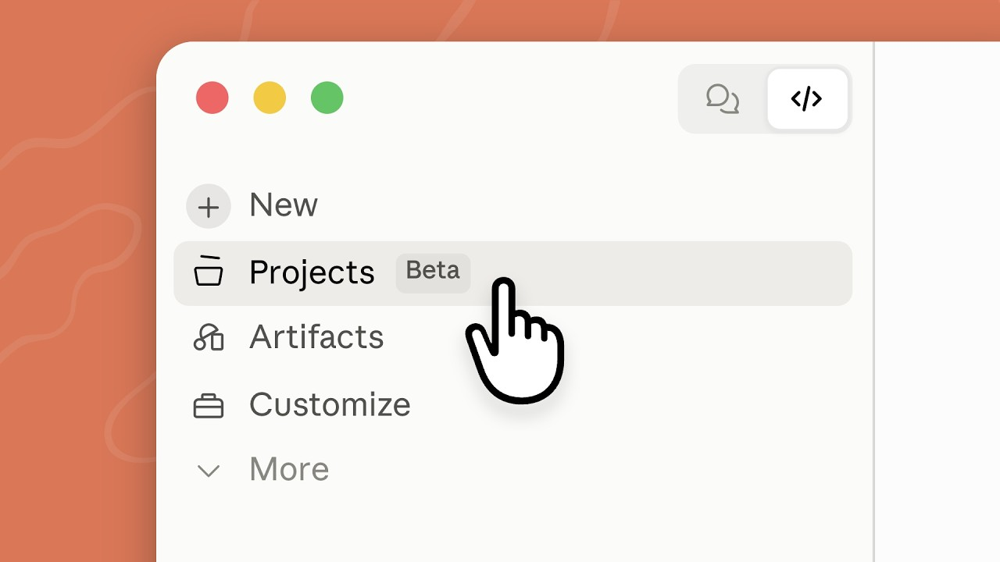
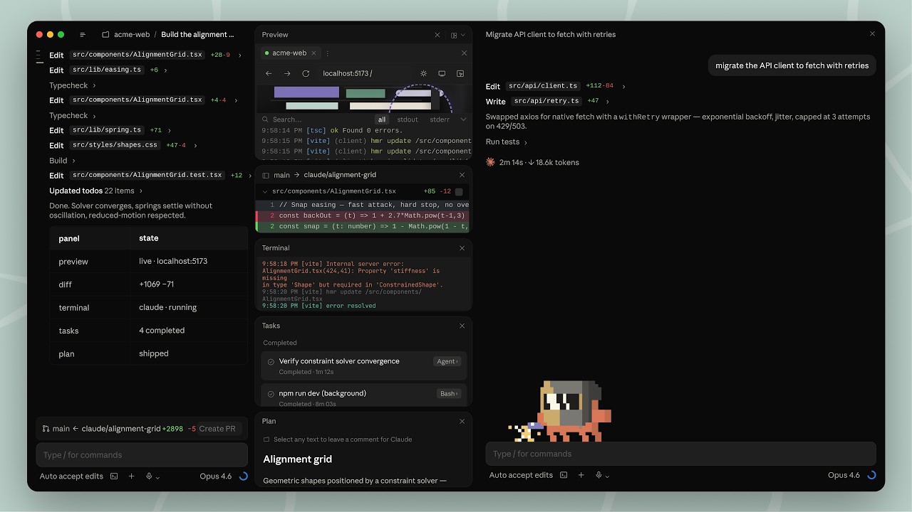

Claude 데스크톱 앱의 Code 탭, 코딩은 몰라도 돼요. 평소 말로 시키면 됩니다.

출처: Claude Academy, Navigating the Claude desktop app

출처: Claude 공식 유튜브, Getting started with Claude Code Projects
말풍선은 일반 대화, </> 가 Code 탭
설치하고 로그인
Windows 는 먼저 설치
자료, 결과물 두 칸
환경은 Local
"뭐가 있는지 알려줘"
"결과물 폴더에 Word 로 저장해줘" 한 마디면 파일이 생겨요
@자료/거래내역.xlsx 월별 합계 내서 결과물/에 엑셀로 저장해줘결과물/월별합계.xlsx로 저장했어요. 6월 출금이 다른 달보다 3배 많아서 표에 따로 표시해 뒀어요.일반 대화라면 표를 복사해서 엑셀에 붙여넣고 저장까지 직접 해야 해요
자료/에 계약서_v1.docx, 계약서_v2.docx, 거래내역.xlsx 세 개가 있고 결과물/은 비어 있어요. 계약서 두 개는 버전이 다른 같은 문서로 보여요. 바뀐 부분을 비교해 드릴까요?폴더 안을 먼저 보여 달라고 하면 엉뚱한 파일을 볼 일이 줄어요
Claude 가 일하는 곳, 내 PC
어느 폴더에서 일할지
감시 모델이 먼저 검사, 다다음 장
어떤 Claude 를 쓰는지

출처: Claude 공식 유튜브, The new Claude Code desktop app (개발 작업 예시라 코드가 많아요)
코드, 터미널은 무시하고 대화와 맨 아래 한 줄만
@자료/계약서_v2.docx 의 5조만 쉬운 말로 풀어줘Esc 로 멈추고 바로 다시 말하기, @ 를 치면 파일 목록이 떠요. 주제가 바뀌면 Ctrl+N
| 모드 | 뜻 | 언제 |
|---|---|---|
| Auto | 거의 안 물음, 위험한 건 감시 모델이 막음 | 평소 |
| Plan | 계획만 세우고 아무것도 안 바꿈 | 큰 작업 전에 |
| Manual | 고칠 때마다 허락을 물음 | 하나하나 볼 때 |
| Bypass | 검사 없이 전부 실행 | 쓰지 않기 |
Auto 는 되돌릴 수 없는 삭제, 정보 외부 전송, 강제 덮어쓰기를 막아요. 기본값은 사용자 settings.json 에.
거절해서 망가지는 건 없어요
| 이런 요청이 뜨면 | 뜻 | 판단 |
|---|---|---|
| 결과물/월별합계.xlsx 만들기 | 결과 파일 저장 | 허락 |
| git push | GitHub 에 올리기 | 시켰으면 허락 |
| rm 자료/계약서_v1.docx | 자료 파일 삭제 | 거절 |
| curl ... | bash | 인터넷 프로그램 실행 | 거절, 물어보기 |
내가 시킨 일과 맞는지만 보면 돼요
자료/ 폴더 PDF 20개를 날짜, 당사자, 핵심 내용으로 정리해서 엑셀로 만들어줘결과물/PDF정리.xlsx 저장 ④ 날짜를 못 찾은 파일은 따로 표시. 이대로 진행할까요?Plan 모드에서는 계획만 보여주고 아무것도 바꾸지 않아요
"나는 구매자 측이야"
"불리한 조항을 찾고 싶어"
"@자료/계약서.docx 봐줘", @ 치면 목록이 떠요
"표로, 결과물 폴더에 Word 로 저장"
| 상황 | 이렇게 말하면 | 이렇게 말하기 |
|---|---|---|
| 보고서 | "요약해줘" | "임원 보고용, 결론 먼저, 세 줄" |
| 엑셀 | "정리해줘" | "거래처별 합계, 큰 순서, 엑셀로 저장" |
| 메일 | "답장 써줘" | "배송 3일 지연 사과, 정중하게, 다섯 줄" |
| 비교 | "뭐 바뀌었어?" | "바뀐 조항만, 이전과 이후를 표로" |
입장, 목표, 자료, 형식 중 빠진 걸 채우면 돼요
무엇을 말해야 할지 모르겠을 때 쓰는 말
"이게 명령어예요"
줄이기
처음 보는 사람도 알게
한눈에 보기
나머지는 그대로
검토
되돌리기
처음부터 다시 묻지 말고, 같은 작업 안에서 이어서 고쳐 달라고 하기
@자료/보고서.pdf 요약해줘 → A4 두 장 분량의 요약이 나옴처음부터 다시 묻지 말고 짧게 고쳐 달라고 하기
Shift+Enter 는 줄바꿈
목록에서 골라 넣기
스킬 이름으로 바로 부르기
주제가 바뀌면 새로
엉뚱하게 가면 바로
큰 작업은 계획부터 보기
| 조항 | v1 | v2 | 누구에게 유리? |
|---|---|---|---|
| 5조 대금 지급 | 납품 후 30일 | 납품 후 60일 | 판매자에게 불리 |
| 9조 계약 해지 | 30일 전 통보 | 7일 전 통보 | 상대방에게 유리 |
| 12조 위약금 | 계약금의 10% | 변경 없음 | - |
두 계약서 비교 결과 예시, 회사와 숫자는 가상이에요. 꼭 원본과 대조하기
CLAUDE.md 를 직접 열어서 고칠 필요가 없어요
"이건 틀렸어, 원본은 30일이야"
"왜 그렇게 했어?"
"CLAUDE.md 에 적어줘"
다음 작업에서 지키는지 보기
말로만 하면 다음 작업에서 잊어요, 규칙으로 남기기
자료/계약서.docx 를 왜 고쳤어? 원본은 건드리면 안 돼| 이런 실수라면 | 남길 곳 | 이렇게 말하기 |
|---|---|---|
| 모든 작업에서 안 되는 것 | CLAUDE.md | "CLAUDE.md 에 적어줘" |
| 특정 작업에서만 생기는 것 | 그 작업의 스킬 | "안내문 스킬에 추가해줘" |
| 절대 일어나면 안 되는 것 | 설정의 금지 규칙 | "settings.json 에 금지 규칙으로" |
"방금 한 방식을 스킬로 만들어줘"
비슷한 일에 몇 번
아쉬운 부분 찾기
"스킬에 이거 추가해줘"
말 안 해도 알아서
name: 안내문 / description: 고객 안내문 초안을 쓸 때 사용. 요점, 일정, 문의처 순서로.description 이 제일 중요, Claude 가 이걸 보고 꺼낼지 정해요
.claude/skills/안내문/SKILL.md 를 만들었어요. 요점, 일정(요일 포함), 문의처 순서로 쓰고 Word 로 저장해요.결과물/2026-12-01 휴무 안내문.docx다음부터는 짧게만 말해도 같은 방식으로
명령어는 몰라도 돼요. "GitHub 에 올려줘", "받아줘" 라고 말로 시키면 Claude 가 해요.
.gitignore 는 "올리지 말 것" 목록 파일, 폴더 이름을 한 줄씩 적어요
자료/, 결과물/은 .gitignore 에 있어서 올리지 않았어요.올리기는 push, 받기는 pull, 말로 시키면 돼요
| Claude 가 말하면 | 뜻 | 할 일 |
|---|---|---|
| "올리기 실패" | 인터넷이나 로그인 문제 | 작업은 PC 에 그대로, 나중에 다시 |
| "충돌이 있어요" | 같은 파일을 다른 곳에서도 고침 | "어떻게 하면 돼?" 물어보기 |
| "로그인이 필요해요" | GitHub 연결이 끊김 | 도와줄 사람에게 연락 |
올리기에 실패해도 작업한 내용은 PC 에 안전하게 남아요
출처, 조문, 숫자는 그럴듯하게 틀릴 수 있음
원본은 폴더에 넣지 않기
실명은 A, B 로, 주민번호, 연락처는 삭제
Bypass 는 쓰지 않기, 모르는 허락은 거절
계획을 보고 진행
Claude 는 초안까지
Claude 는 초안까지, 책임은 사람
대금 지급 기한은 납품 후 60일입니다 (원문 확인 필요: 계약서 5조)한 번 적어 둔 규칙과 스킬이 다음 작업을 빠르게